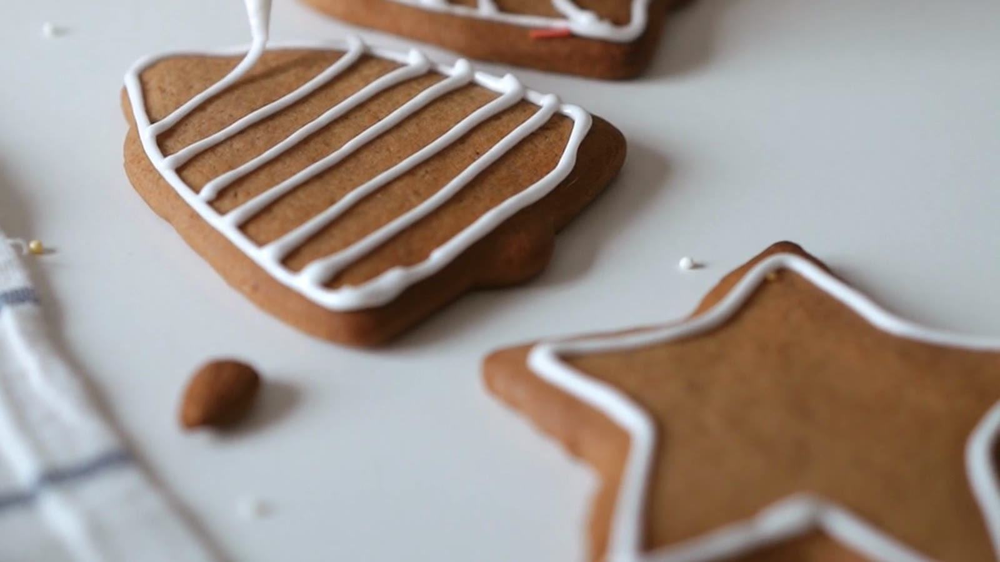

Swedish Gingerbread Cookies
- 35 min, plus a night
- about 60 cookies
- Christmas
Pepparkakor, the way Swedes bake them in December. The dough rests overnight so it rolls thin, the oven needs only 5 minutes, and the cookies turn snappy as they cool.
Ingredients
For the dough
- butter150 g
- sugar180 g
- golden syrup100 ml
- ground ginger1 tbsp
- ground cinnamon1 tbsp
- ground cloves2 tsp
- water100 ml
- baking soda1 tsp
- plain flour480 g
For the icing
- egg white1
- icing sugar200 g
- lemon juicea few drops
Directions
- Melt the butter with the sugar, syrup and spices. Take the pan off the heat and stir in the water.
- Mix the baking soda into the flour, then work it into the warm butter until smooth. Wrap the dough and leave it in the fridge overnight.
- Heat the oven to 200°C / 400°F. Roll the dough out thin, 2 to 3 mm, and cut out shapes.
- Bake for 5 minutes, until the edges darken. Let the cookies cool on the tray: they turn snappy as they cool.
- Whisk the egg white with the icing sugar and lemon juice until thick, then pipe it onto the cooled cookies.
Keep this recipe on your phone
Paste the link to this page into Import in TasteKeep, or tap Share on this page and choose TasteKeep. The recipe lands in your book with the photo, the dough and icing groups and the steps, and cooking mode runs the timer on each step for you.
TasteKeep for iPhone and iPad. Free on the App Store. No account, no subscription.
Photo: a frame from the Pexels series by olia danilevich used in our video.